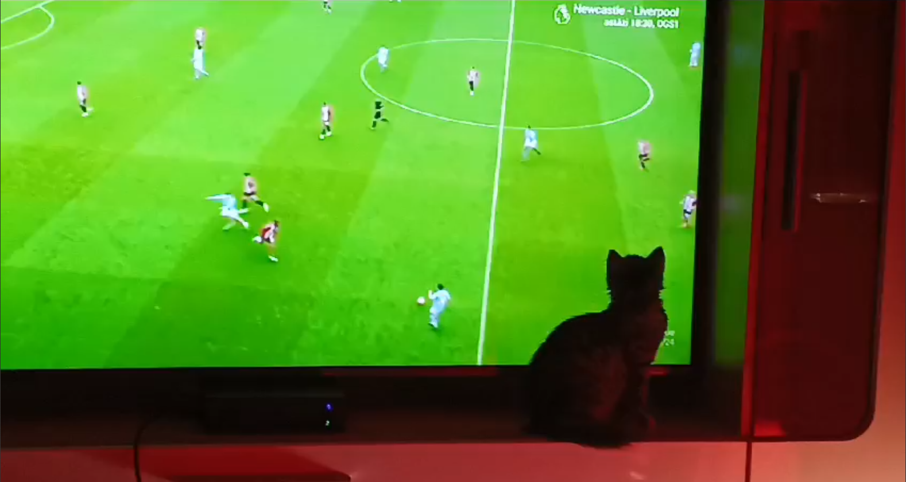

My hobbies
My hobbies can be divided in two categories: indoor hobbies amd outdoor hobbies. For the indoor hobbies i like video games (strategy, shooters, racing, fighting, story, etc), reading, especially historical or dystopian books, George Orwell beign one of my favourite author, music in general, and movies or series, any genre if it is interesting. For my outdoor hobbies, I am a sports fan, I play football, my favourite team beign FC Barcelona, basketball, I am a huge fan of the Boston Celtics in the NBA, winter sports, especially skiing, I've been doing it since I was 7, and traveling, I love to visit different countries and explore the cities and learn more about the culture.

Why am I here?
Well, I guess I love programming, for me it wasn't about if programming is my path in the future, i finished high school at one of the best Computer Science college in my country, I've been to competitions and followed courses in C++, HTML, php and JavaScript. The thing is that i wanted to learn in a new way, so i decided to try my luck at a university in a foreign country, and now I am here
Extra-curricular activities
Most of my extra-curricular activities were at least in some part programming related, courses on web development, internships, but not all, I love animals, I have 2 dogs and 3 cats back home, so occasionally i would go and work at an animal shelter in atown near my home, there I did anything that was needed: walking the dogs, cleaning the animals, feeding them.
